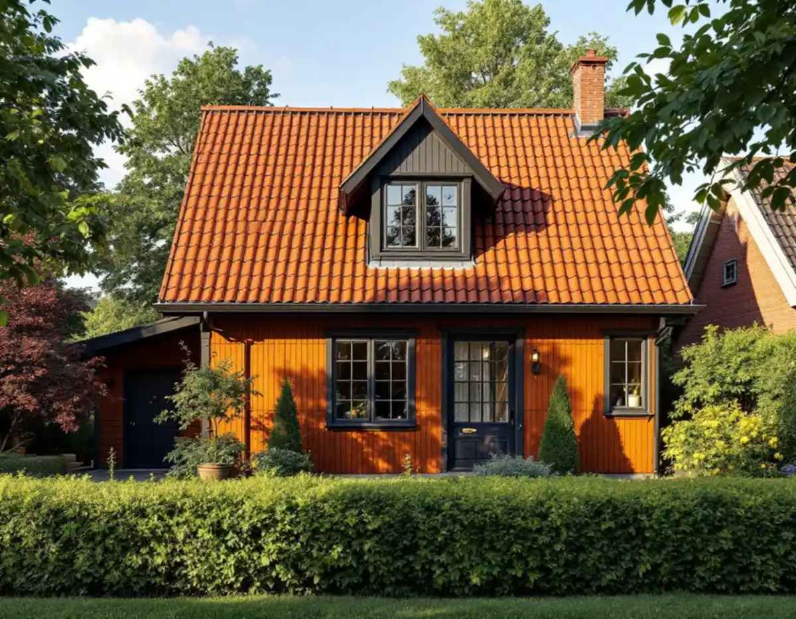
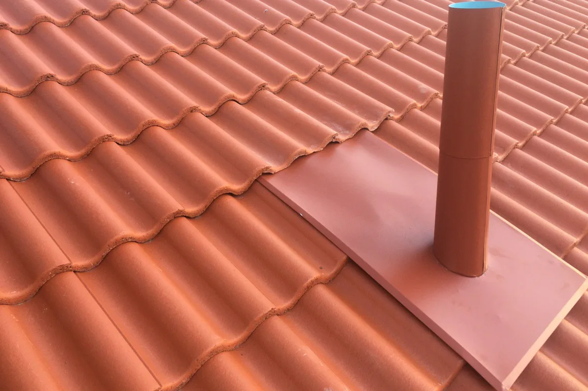

Besök med stege och kikare
Vi tittar på kupor, ränndalar, takfot och bleck och på vinden där fukt brukar synas först.
I Bromma sitter plåten ofta på ställen som är lätta att glömma: kring de små takkuporna mitt på trädgårdsstädernas långsidor, längs takfoten på funkisvillornas låga tak och under fönstren. Geal Entreprenad AB har egna plåtslagare som lagar och byter beslag, rännor och bleck i hela Bromma, med gratis platsbesök och skriftligt kostnadsförslag.

Stadens vägledning Varsam utveckling av småhus- och villaområden beskriver hur 1920-talets klassiska formspråk tog över i Nockeby, Höglandet, Ålsten, Smedslätten och Ulvsunda. Husen var enkla volymer i ett och ett halvt plan, de branta sadeltaken i rött tegel gav stadsdelarna en enhetlig karaktär, och små konstfulla takkupor mitt på långsidorna gav varje hus en egen identitet.
För en plåtslagare är kupan det mest krävande stället på ett sådant tak. Kupans tak, dess sidor och anslutningen mot pannorna består av plåt som ska ta emot vattnet från ett brant takfall och leda det runt kupan. Där plåten har spruckit, lagats med fogmassa eller lagts om utan rätt överlapp brukar fukten synas inne på vinden innan den syns utifrån.
Vägledningen råder ägarna att ta tillvara eller återskapa karaktärsskapande material och byggnadsdelar. När vi gör om plåten kring en kupa utgår vi därför från de profiler och den kulör som finns, så att kupan behåller sitt utseende från gatan.

Södra Ängby blev enligt vägledningen den sista stadsdelen som planerades efter trädgårdsstadens principer, men husen fick ett modernistiskt formspråk: kubiska volymer, oftast i två våningar, med svagt lutande tak och brutet vita eller ljust grå fasader i slätputs eller liggande träpanel. Staden beskriver området som ett av Europas största sammanhängande områden av villor från 1930-talet i modernistisk stil.
På ett svagt lutande tak rinner vattnet långsamt, och därför blir skarvar, genomföringar och takfotens plåt avgörande för tätheten. På de här husen är takkanten dessutom en del av arkitekturen. En grov fotplåt eller en vindskiva som är bredare än originalet syns direkt mot den släta fasaden.
Vi mäter upp befintliga profiler innan något rivs och bockar ny plåt efter dem. Är taket i så dåligt skick att hela tätskiktet behöver göras om finns mer under takrenovering i Bromma.
Bromma har både putsade fasader och stående eller liggande träpanel, och på båda är fönsterblecket en svag punkt. Boverket nämner bleckens lutning och om blecken sluter tätt mot väggen som faktorer som påverkar risken för fuktskador vid fönster, och att det behövs en dränerande och ventilerande spalt under blecket.
På en putsad funkisvilla ska blecket gå in under putsens kant eller ha ett uppvik som tätas mot fasaden, och droppkanten ska släppa vattnet så långt ut att putsen under fönstret inte blir randig. På en panelfasad ska blecket ligga över bröstningsbrädan och släppa vattnet utanför panelen. I båda fallen kontrollerar vi karmens nederkant när det gamla blecket är borta.
Ska fasaden renoveras samtidigt är det klokt att göra blecken i samma etapp, se fasadrenovering i Bromma.
Stockholms stad räknar byte av kulör eller material på fasad eller tak, nya fönster och dörrar samt balkonger och mindre takkupor som fasadändringar. För en- och tvåbostadshus krävs normalt inget bygglov för dem sedan 1 december 2025, men lov behövs om huset är särskilt värdefullt, ligger i ett särskilt värdefullt område eller om detaljplanen har skyddsbestämmelser.
Stadsmuseets klassificeringskarta ger en första indikation, men staden påpekar att alla byggnader och områden ännu inte är inventerade och att man kan behöva kontakta Stadsmuseet för en bedömning. Vägledningen pekar dessutom ut Ålstensgatan och Södra Ängby som riksintressen.
Att byta plåt mot samma material och utförande räknas enligt Boverket som underhåll. Att gå från tegel till plåt på ett tak, eller att bygga en ny kupa, är däremot ändringar som kan kräva lov i de värdefulla områdena. Lokala takarbeten i stort hittar du under takläggare i Bromma.
Vi tittar på kupor, ränndalar, takfot och bleck och på vinden där fukt brukar synas först.
Stadsmuseets karta och detaljplanen stäms av innan material och kulör bestäms.
Kupor, rännor och bleck prissätts var för sig i ett skriftligt kostnadsförslag.
Befintliga profiler mäts så att ny plåt får samma mått och vikningar.
Gammal plåt tas bort, underlaget kontrolleras och ny plåt monteras med rätt överlapp.
Vi går igenom arbetet tillsammans och visar var vattnet tar vägen.
För ett småhus ger det rotavdrag att reparera eller byta plåttak, hängrännor och stuprör och att byta fönsterbleck, enligt Skatteverket. Avdraget är högst 30 procent av arbetskostnaden och högst 50 000 kr per person och år, inom ett gemensamt tak på 75 000 kr för rot och rut.
Plåten och resorna ger inget avdrag. Geal gör avdraget direkt på fakturan.
Antalet kupor och ränndalar, om profilerna behöver tillverkas efter förlaga, hur mycket av takfoten och blecken som byts och vilken ställning som behövs för att nå kuporna på ett brant tak. Efter ett kostnadsfritt platsbesök får du ett skriftligt kostnadsförslag.
Plåttak, hängrännor och beslag.
Plåtslagare i Stockholm →Takbyte, takbesiktning och plåtarbeten.
Takläggare i Bromma →Trädgårdsstäder, tegel och funkistak.
Takrenovering i Bromma →Trädgårdsstad, karta och 30 m² inom plan.
Attefallshus i Bromma →Vind, bärande väggar och en andra bostad.
Byggföretag i Bromma →Kulörval och färgtyp i trädgårdsstaden.
Fasadmålning i Bromma →Småspröjs, småstugor och funkis i Bromma.
Fönsterbyte i Bromma →Småstugornas fönster, kitt och linoljefärg.
Fönsterrenovering i Bromma →Slipa furugolvet och behandla med lut och såpa.
Golvslipning i Bromma →Trävillor, småstugor och funkisvillor.
Badrumsrenovering i Bromma →Trädgårdsstäder, småstugor och funkis i Bromma.
Fasadrenovering i Bromma →Villor i trädgårdsstäderna och lägenheter i smalhus.
Golvläggare i Bromma →Imkanal, småstugor och trävillor.
Köksrenovering i Bromma →Fasad och interiör i Brommas villastäder.
Målare i Bromma →Verandor, entréer och altaner.
Snickare i Bromma →Lertegel, småstugor och solceller i Bromma.
Takbyte i Bromma →Spara och ersätta gamla tapeter.
Tapetsering i Bromma →Småstugor, trädgårdsstad och prickmark.
Tillbyggnad i Bromma →Hela villan i rätt ordning.
Totalrenovering i Bromma →